Roses
Roses 2010 LIVE: Sunday
Live coverage for the final day of Roses 2010
Lancaster
York
Roses reports
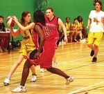Lancaster gain their perfect revenge
It transpires last year’s 115-point humiliation smarted much more than we ever imagined. For twelve months, the sportsmen and women of Lancaster have been licking their wounds, plotting and scheming, counting down to the opportunity to enact delicious revenge
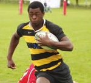Tournament Highlights
Best club, Best player, Best match, Funniest Moment
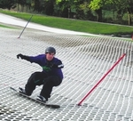Controversial officiating denies YUsnow clean sweep on the slopes
The final score over at Rossendale on Friday evening read York 10 Lancaster 2 as YUsnow once again left behind a trail of disheartened Lancastrians in the ski and snowboard events, despite having very little training on dry slopes since Christmas
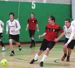Firsts prevail in indoor football
Two goals from Conor Brennan helped the men’s firsts Indoor Football side secure York’s first points of the day with a 4-2 victory in a hotly contested clash
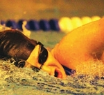Lancaster take control in the pool
Both of York’s swimming teams were comfortably beaten on Roses weekend, yet the men’s and women’s teams can both take heart that they performed admirably against a much stronger force
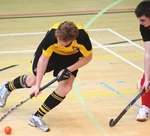Bode hat-trick earns dramatic win
A timely hat-trick from Nico Bode saw York record a memorable win in the men’s firsts indoor hockey fixture by 5 goals to 3
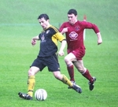Miserable afternoon for football club
If Roses had a low point, this was it. At the final whistle Lancaster celebrated the 3-1 victory loudly, but it’s fair to say that even they would have not enjoyed getting there
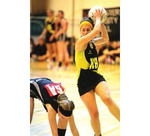Two wins out of three for weakened Netball sides
It was a Saturday afternoon of mixed fortunes for the York University Netball Club at Roses 2010, with the firsts unable to make it a hat-trick of victories after the second and thirds had done the business
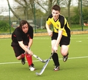Comebacks the theme in hockey feast
As the red of Lancaster became more prominent on the Roses scoreboard, York’s hockey players went some way to emboldening their slowly fading tournament chances, recording an 8-5 overall win in sometimes torrid conditions
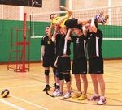Lancaster turn up the pressure
Though York’s chance to make Roses history, by retaining the Carter James Trophy for the Fourth consecutive year, officially ended on the contest’s final day, it was on Saturday that it became evident that defeat was inevitable
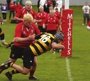Satisfying victory for rugby firsts
It wasn’t a vintage performance by any means but York men’s firsts held on for a 19-17 victory, giving UYRUFC a highly satisfying clean sweep of this weekend’s rugby
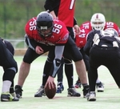Lancaster wrap up victory after Sunday domination
With Roses having been effectively won the day before, York teams turned out knowing that only pride was at stake and enjoyed a mixed set of results on Roses’ final day
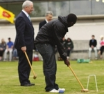Cunning Cantor in croquet glory
Try telling Vice-Chancellor Brian Cantor that it’s the taking part that counts. His teammate YUSU President Tim Ngwena might be all about keeping it cool, but Cantor’s a man who hasn’t got to the top by losing
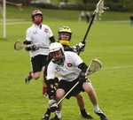Easy win for lacrosse
Although not as comfortable as some pre-match predictions, York’s men’s lacrosse team encountered few problems in Sunday afternoon’s 18-6 romp
The Mixer at Roses 2010
The closing ceremony – for many a highlight of the weekend, for others just a place to dry off and ogle at some cheerleaders
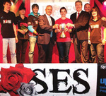Lancaster block York’s four in a row with resounding Roses victory
The University of Lancaster have won Roses for the first time since 2007, beating York 157.5-105.5 on home territory
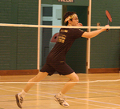Defiant Badminton team inflict heavy defeat
Defiance can ease even the most sobering defeat and enliven the most convincing of wins, as the Badminton firsts and their spirited Captain James Hor will attest
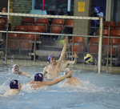Double defeat for York in Water Polo
It was double disappointment for York in the water polo on Saturday at Roses as both the men’s and women’s squads came up short despite performing wholeheartedly
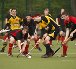McIlwraith’s boys cap off season with fighting draw
A spirited revival from York allowed them to come back from two goals down to draw 2-2 in the centrepiece of yesterday’s events on the Astro.
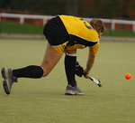Bartlett injury mars competitive draw
A nasty injury to Charlie Bartlett overshadowed an entertaining, high scoring draw in the women’s firsts hockey fixture earlier today.
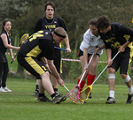Lancaster outclassed in Mixed Lacrosse
York’s mixed lacrosse team cruised to a 17-8 victory over an outclassed Lancaster outifit early on Day two of Roses
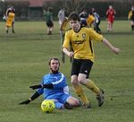Football seconds consigned to unfortunate defeat
Two late strikes from Lancaster men’s football seconds consigned York to a harsh defeat, with the game itself played in atrocious weather conditions for the full ninety minutes
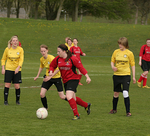York crushed in Women’s Football
York were no match for Lancaster in today’s women’s football encounter, the Red Rose romping to a 5-0 win
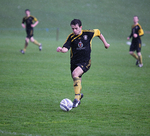Football firsts frustrated in nightmare conditions
York men’s football firsts endured a torrid time this afternoon, losing 3-1 to Lancaster in almost unplayable conditions.
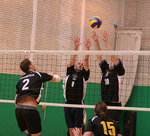Mixed Volleyball fightback opens York’s Saturday account
In an epic five-setter, York’s mixed volleyball side picked up the first points of Saturday morning with a stunning fightback
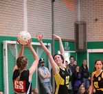Mixed afternoon for Netball Club
It was two wins out of three for York’s Netball Club on Saturday afternoon, with victories in the seconds and thirds but defeat for the firsts
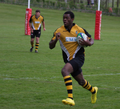Rugby sevens provides Saturday highlight for York
Rugby 7s has provided a rare highlight for York on Day 2 of Roses, securing a clean sweep of victories for the three men’s sides and the women coming from behind to earn a last gasp draw
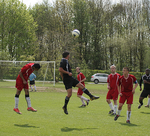Men’s football thirds fall to Lancaster select
The men’s football thirds went down to the Lancaster College Football’s juggernaut by two goals to one in a highly physical encounter on Roses Saturday.
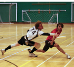Close defeat for York Ultimate at Roses
York’s Ultimate Frisbee team lost by ten points to nine in a thrilling encounter on Friday night against Lancaster.
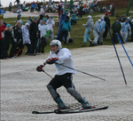York denied clean sweep on the slopes
A controversial decision in the snowboarding event prevented York’s skiers and snowboarders picking up the full compliment of 12 points at Rossendale yesterday
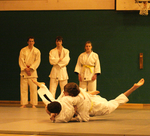Depleted York take share of Judo points
Despite having to forfeit two of their five contests, York were able to take two Roses points from the Judo this afternoon
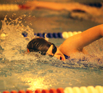York outclassed as Lancaster dominate in the pool
A dominant Lancaster display sent both York teams to defeat in the showdown at the swimming pool today
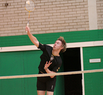Spoils shared in Friday badminton fixtures
York’s mixed badminton team comfortably beat their Lancaster opponents this afternoon, but the men’s seconds were less successful, losing 5-4
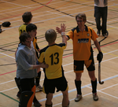Bode hat-trick sees York take Indoor Hockey spoils
A hat-trick from Nico Bode saw York record a memorable win in the Mens’ Firsts’ Indoor Hockey and snatch the overall Indoor Hockey points victory by 3.5 to 2.5
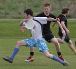Defiant frisbee-ers undone by Lancaster comeback
A defiant performance by York’s mixed ultimate frisbee firsts was not enought to beat an impressive Lancaster team in the outdoor event this morning
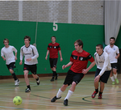Indoor football firsts take early York points
Last gasp goals from Conor Brennan and Jack Crane gave York their first victory of Friday, winning a thrilling encounter 4-2.
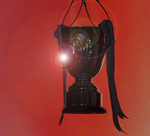York to enter Roses 2010 with 12-point deficit
York will be forced to fight back from a 12-point deficit to retain the Carter-James Trophy after negotiations over the cancelled rowing events reached a compromise
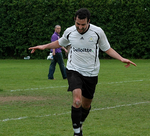Roses Preview – Flashback to 2009
A look back at the highlights from Roses 2009, a memorable weekend for the University of York
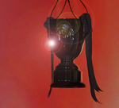Roses Preview – History of the Tournament
A brief history of Roses, the annual sports tournament between the universities of York and Lancaster
Rowing absent from schedule for 46th Roses tournament
The timetable for the 2010 Roses competition between York and Lancaster has been unveiled, though Rowing, the tournament’s inaugural event, will be missing
Fixtures
- Thursday
- Friday
- Saturday
- Sunday
| Match | Venue | Time | Points | Final Score |
|---|---|---|---|---|
| Cricket — Men's 1st | Lancaster Cricket Ground | 11.00 | 4 | York 192 - Lancaster 188 |
| Match | Venue | Time | Points | Final Score |
|---|---|---|---|---|
| Equestrian — 1st Team | Riding School | 10.00 | 4 | York 60 - Lancaster 4 |
| Equestrian — 2nd Team | Riding School | 10.00 | 2 | York 47 - Lancaster 44 |
| Indoor Football — Men's 3rd | Main Sports Hall | 10.00 | 1 | York 1 - Lancaster 5 |
| Indoor Football — Women's 2nd | Main Sports Hall | 10.30 | 1 | York 0 - Lancaster 3 |
| Indoor Football — Men's 2nd | Main Sports Hall | 11.00 | 1 | York 1 - Lancaster 6 |
| Indoor Football — Women's 1st | Main Sports Hall | 11.30 | 2 | York 1 - Lancaster 2 |
| Indoor Football — Men's 1st | Main Sports Hall | 12.00 | 2 | York 4 - Lancaster 2 |
| Frisbee — Open | Football Pitch 1 | 12.00 | 4 | York 11 - Lancaster 15 |
| Indoor Hockey — Women's 2nd | Main Sports Hall | 12.30 | 1 | York 2 - Lancaster 5 |
| Indoor Hockey — Men's 2nd | Main Sports Hall | 13.30 | 1 | York 2 - Lancaster 2 |
| Indoor Hockey — Women's 1st | Main Sports Hall | 14.30 | 2 | York 1 - Lancaster 1 |
| Indoor Hockey — Men's 1st | Main Sports Hall | 15.30 | 2 | York 5 - Lancaster 3 |
| Badminton — Mixed | Main Sports Hall | 16.30 | 4 | York 8 - Lancaster 1 |
| Badminton — Men's 2nd | Main Sports Hall | 16.30 | 2 | York 4 - Lancaster 5 |
| Judo — Men's Over 90kg | Minor Sports Hall | 17.00 | 1 | York 0 - Lancaster 10 |
| Judo — Men's Under 90kg | Minor Sports Hall | 17.00 | 1 | York 0 - Lancaster 10 |
| Judo — Men's Under 81kg | Minor Sports Hall | 17.00 | 1 | York 10 - Lancaster 0 |
| Judo — Men's Under 73kg | Minor Sports Hall | 17.00 | 1 | York 0 - Lancaster 10 |
| Judo — Women's Over 57kg | Minor Sports Hall | 17.00 | 1 | York 10 - Lancaster 0 |
| Judo — Women's Under 57kg | Minor Sports Hall | 17.00 | 1 | pending |
| Snow Sports — Skiing Mixed | Rossendale | 17.30 | 4 | York 4 - Lancaster 0 |
| Snow Sports — Skiing Womens | Rossendale | 17.30 | 4 | York 4 - Lancaster 0 |
| Snow Sports — Snowboard | Rossendale | 17.30 | 4 | York 2 - Lancaster 2 |
| Swimming — Men | Swimming Pool | 17.30 | 4 | York 48 - Lancaster 64 |
| Swimming — Women | Swimming Pool | 17.30 | 4 | York 34 - Lancaster 76 |
| Darts — Men | Barker House Farm | 18.00 | 4 | York 4 - Lancaster 5 |
| Darts — Women | Barker House Farm | 18.00 | 4 | York 2 - Lancaster 7 |
| Pool — Men | Barker House Farm | 18.00 | 4 | York 3 - Lancaster 6 |
| Pool — Women | Barker House Farm | 18.00 | 4 | York 1 - Lancaster 8 |
| Indoor Frisbee — Mixed | Main Sports Hall | 19.00 | Exhibition | York 5 - Lancaster 9 |
| Indoor Frisbee — Open | Main Sports Hall | 20.00 | 2 | York 9 - Lancaster 10 |
| Match | Venue | Time | Points | Final Score |
|---|---|---|---|---|
| Sailing — Open | Bolton | 10.00 | 4 | York 3 - Lancaster 0 |
| Archery — Senior Mixed Team | College Pitches | 10.00 | 4 | York 2501 - Lancaster 2968 |
| Archery — Novice Mixed Team | College Pitches | 10.00 | 2 | York 964 - Lancaster 1528 |
| Archery — Novice Male | College Pitches | 10.00 | 1 | York 462 - Lancaster 599 |
| Archery — Novice Female | College Pitches | 10.00 | 1 | York 502 - Lancaster 323 |
| Archery — Senior Male | College Pitches | 10.00 | 1 | York 743 - Lancaster 791 |
| Archery — Senior Female | College Pitches | 10.00 | 1 | York 690 - Lancaster 572 |
| Volleyball — Mixed | Main Sports Hall | 10.00 | 4 | York 3 - Lancaster 2 |
| Hockey — Men's 3rd | Astro 1 | 10.00 | 1 | York 3 - Lancaster 4 |
| Cycling — Mixed | Morecambe Velodrome | 10.00 | Exhibition | pending |
| Debating — Exhibition Match | Fylde Lecture Theatre 1 | 11.00 | Exhibition | pending |
| Fencing — Women | Minor Sports Hall | 11.00 | 4 | York 102 - Lancaster 133 |
| Fencing — Men | Minor Sports Hall | 11.00 | 4 | York 110 - Lancaster 135 |
| Lacrosse — Mixed | Football Pitch 2 | 11.00 | 4 | York 17 - Lancaster 8 |
| Netball — 3rd Team | Main Sports Hall | 12.00 | 1 | York 42 - Lancaster 34 |
| Tennis — Men's 2nd | Tennis Courts | 12.00 | 2 | York 6 - Lancaster 9 |
| Trampoline — Novice, Intermediate & Advanced | Lancaster & Morecambe College | 12.00 | 4 | York 147.5 - Lancaster 148.6 |
| Hockey — Women's 2nd | Astro 1 | 12.00 | 2 | York 3 - Lancaster 2 |
| Snooker — Mixed | Rack 'Em | 12.00 | 4 | York 3 - Lancaster 2 |
| Opening Ceremony — Brass Band | Football Pitches | 12.45 | Exhibition | pending |
| Squash — Men's 1st | Squash Courts | 13.00 | 4 | York 5 - Lancaster 0 |
| Squash — Men's 2nd | Squash Courts | 13.00 | Exhibition | York 1 - Lancaster 4 |
| Squash — Women's | Squash Courts | 13.00 | 4 | pending |
| Football — Men's 3rd/College Select | Football Pitch 2 | 13.00 | 1 | York 1 - Lancaster 2 |
| Netball — 2nd Team | Main Sports Hall | 13.30 | 2 | York 44 - Lancaster 26 |
| Rugby Union 7s — Men's 3rd | Rugby Pitch 1 | 13.30 | 1 | York 24 - Lancaster 19 |
| Tennis — Mixed | Tennis Courts | 14.00 | 4 | York 4 - Lancaster 2 |
| Hockey — Men's 2nd | Astro 1 | 14.00 | 2 | York 1 - Lancaster 0 |
| Rugby Union 7s — Men's 2nd | Rugby Pitch 2 | 14.00 | 1 | York 29 - Lancaster 17 |
| Rugby Union 7s — Women's 1st | Rugby Pitch 1 | 14.00 | 2 | York 12 - Lancaster 12 |
| Football — Women's | Football Pitch 1 | 14.00 | 4 | York 0 - Lancaster 5 |
| Rugby Union 7s — Men's 1st | Rugby Pitch 1 | 14.30 | 2 | York 12 - Lancaster 7 |
| Netball — 1st Team | Main Sports Hall | 15.00 | 4 | York 27 - Lancaster 51 |
| Football — Men's 2nd | Football Pitch 2 | 15.30 | 2 | York 1 - Lancaster 3 |
| Table Tennis — Mixed 1st (Open) | Minor Sports Hall | 16.00 | 4 | York 7 - Lancaster 10 |
| Table Tennis — Mixed 2nds (Open) | Minor Sports Hall | 16.00 | 2 | York 3 - Lancaster 14 |
| Hockey — Women's 1st | Astro 1 | 16.00 | 4 | York 3 - Lancaster 3 |
| Football — Men's 1st | Football Pitch 1 | 16.30 | 4 | York 1 - Lancaster 3 |
| Volleyball — Men | Main Sports Hall | 16.30 | 4 | York 3 - Lancaster 0 |
| Water Polo — Women | Swimming Pool | 17.00 | 4 | York 1 - Lancaster 4 |
| Water Polo — Men | Swimming Pool | 17.00 | 4 | York 10 - Lancaster 19 |
| Hockey — Men's 1st | Astro 1 | 18.00 | 4 | York 2 - Lancaster 2 |
| Badminton — Men's 1st | Main Sports Hall | 18.30 | 4 | York 6 - Lancaster 3 |
| Badminton — Women's 1st | Main Sports Hall | 18.30 | 4 | York 8 - Lancaster 1 |
| Canoe Polo — Polo Open | Swimming Pool | 19.00 | 2 | York 2 - Lancaster 2 |
| Canoe Polo — Polo Women's | Swimming Pool | 19.00 | 2 | York 0 - Lancaster 6 |
| Match | Venue | Time | Points | Final Score |
|---|---|---|---|---|
| It's a Knockout — Morning Session | University Drive | 09.00 | Exhibition | pending |
| Ballroom Dancing — Beginners Latin | Great Hall | 10.00 | 1 | York 19 - Lancaster 23 |
| Ballroom Dancing — Beginners Ballroom | Great Hall | 10.00 | 1 | York 28 - Lancaster 18 |
| Ballroom Dancing — Advanced Latin | Great Hall | 10.00 | 1 | York 35 - Lancaster 28 |
| Ballroom Dancing — Advanced Ballroom | Great Hall | 10.00 | 1 | York 34 - Lancaster 29 |
| Canoe Slalom — Men's | Garstang | 10.00 | 2 | York 0 - Lancaster 2 |
| Canoe Slalom — Women's | Garstang | 10.00 | 2 | York 0 - Lancaster 2 |
| Volleyball — Women | Main Sports Hall | 10.00 | 4 | York 2 - Lancaster 3 |
| Running — 10km Race | University Drive | 10.30 | Exhibition | pending |
| Climbing — Mixed A Team | Bouldering Room | 11.00 | 4 | York 292 - Lancaster 303 |
| Climbing — Mixed B Team | Bouldering Room | 11.00 | 2 | York 277 - Lancaster 231 |
| Climbing — Mixed C Team | Bouldering Room | 11.00 | Exhibition | York 118 - Lancaster 207 |
| Running — 1.5km Race | University Drive | 11.00 | Exhibition | pending |
| Croquet — Chancellor and VC | Outside Ruskin Library | 11.00 | Exhibition | pending |
| Tennis — Women's 1st | Tennis Courts | 11.00 | 4 | York 12 - Lancaster 3 |
| Rugby Union — Men's 3rds | Rugby Pitch 2 | 11.00 | Exhibition | York 34 - Lancaster 22 |
| Running — 5km Race | University Drive | 11.30 | Exhibition | pending |
| Football — College Winners | Football Pitch 1 | 11.30 | Exhibition | York 4 - Lancaster 1 |
| Lacrosse — Women | Football Pitch 2 | 11.30 | Exhibition | York 1 - Lancaster 8 |
| Rounders — Mixed | College Pitches | 12.00 | Exhibition | York 7.5 - Lancaster 21 |
| Netball — 4th Team/College Select | Outdoor Netball Courts | 12.00 | Exhibition | York 11 - Lancaster 24 |
| American Football — Men's | Astroturf Pitch 2 | 12.00 | 4 | York 6 - Lancaster 22 |
| Basketball — Women | Main Sports Hall | 12.00 | 4 | York 34 - Lancaster 49 |
| Rugby Union — Men's 2nd | Rugby Pitch 1 | 12.00 | 2 | York 45 - Lancaster 0 |
| Clay Pigeon Shooting — Open | Bobbin Mill Shooting Ground | 12.30 | Exhibition | York 91 - Lancaster 104 |
| It's a Knockout — Afternoon Session | University Drive | 13.00 | Exhibition | pending |
| Tennis — Men's 1st | Tennis Courts | 13.00 | 4 | York 9 - Lancaster 6 |
| Rugby Union — Women's | Rugby Pitch 2 | 13.00 | 4 | York 2.0 - Lancaster 2.0 |
| Netball — College Winners | Outdoor Netball Courts | 13.30 | Exhibition | York 22 - Lancaster 37 |
| Lacrosse — Men | Football Pitch 1 | 13.30 | 4 | York 18 - Lancaster 6 |
| Karate — Kata & Kumite | Minor Sports Hall | 14.00 | 4 | York 0.0 - Lancaster 4.0 |
| Basketball — Men | Main Sports Hall | 14.00 | 4 | York 49 - Lancaster 65 |
| Rugby Union — Men's 1st | Rugby Pitch 1 | 14.00 | 4 | York 19 - Lancaster 17 |
| Closing Ceremony — Presentation | Roses Hub | 16.30 | Exhibition | pending |